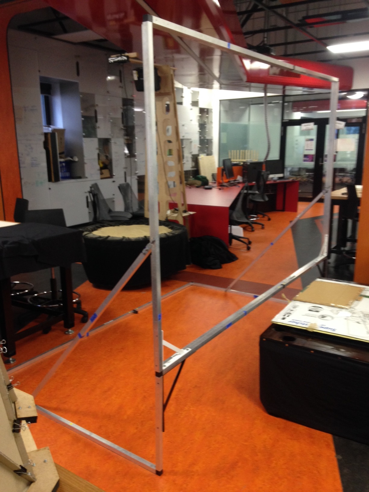

Discussing Physical Design of Tangible User Interfaces
Daniel Fraser | 43595839
View the report in PDF form here: PDF (not linked yet)
Abstract:
This report looks at what a TUI is and breaks down aspects of the physical design of a TUI, analysing MozART, an art instillation/musical instrument TUI developed at the University of Queensland. The physical design of a TUI is one of the largest parts of TUI development as physical/visual language is a key component in how the user perceives the TUI. The report first establishes what a TUI is and the problem space MozART solves. Then looks at significant aspects of physical design like shape and size, comparing the way that MozART and similar TUIs design these aspects and their pros and cons. It was found that because physical design is such an influential factor in the users perception of the TUI, when designing the physical aspect careful attention to the users needs are required. If was found that successful physical design of TUIs is no golden formula and all different types of design choices based on aspects like shape and size have merit. This is significant because it shows that no approach is incorrect and success can be found with any TUI just by designing for the intended user and experience first.
In this report I intents to look at what it means for something to be a Tangible User Interface (TUI) and breakdown various components like size and shape of the physical design of a TUI. To help grasp these concepts I will look specifically at how the TUI art instillation/musical instrument MozART, developed at the University of Queensland was designed and built. I will also look at other TUI’s in a similar style to MozART and analyse where they succeeded and failed and apply this understanding to possible future changes to MozART’s physical design.
What is a TUI
A Tangible User Interface or TUI, is the name given to a physical interface for interacting with digital technology. One of the most relevant definitions of a TUI is: “Giving physical form to digital technology that fits into our social, cultural and physical context.” ("Introduction To Tangible User Interface (TUI)", n.d.). Digital technology has no physical state and a TUI is needed to communicate with and receive feedback from these digital systems. By these definitions MozART is a TUI.
MozART: The Problem Space
Team Good Vibes designed MozART originally so any user, especially those with no musical experience or instrumental training can easily explore musical creation on the canvas. The physical design of MozART should accommodate this goal. The size and shape of MozART should be able to deliver a diverse experience for a single user and also allow for multi user interactions. Any additional iterations of MozART need to keep this goal in mind and should develop features to benefit both the single user and multi user interactions. Above all, having a design that allows the user to learn and eventually lead to confident control of MozART by the user is imperative.
Current MozART Iteration
MozART is a self-supported aluminium frame with a detachable spandex sheet (the canvas). The canvas is 2.5m wide and 2m tall with a 0.5m clearance from the ground. The Microsoft Kinect sensor has a limit range that it can accurately detect depth. With a 2.5m wide zone to detect the Kinect needed to be just under 3m back from the canvas. We found this a good balance of accuracy, appropriate canvas size and space needed to set up MozART.
The canvas is completely vertical and flat wall of spandex. The Microsoft Kinect needs an unbiased field of view to accurately detect the depth. If the canvas was at an angle for any reason, the Kinect would not detect depth accurately and would need to be adjusted appropriately.
The Canvas is split into three sections. These sections are enforced by stretched elastic attached equidistantly making 3 identically in size rectangular zones. Due to the elasticity of the spandex a single touch will affect the entire canvas. To accommodate for multiple touches on the canvas that don’t interfere with each other physical barriers are needed. Elastic is used because it is strong enough to establish the zones however flexible enough to allow a user to move over the top of the elastic when performing gestures and interact with multiple zones in a single movement.
 Figure 1: MozART Frame Without Canvas, captured by: Daniel Fraser
Size
The size of the MozART TUI is one of the most interesting areas for future development. When deploying MozART the team received a lot of questions about the possibility of different shapes and sizes that MozART could become. There is opportunity to either expand the canvas, making it much larger or evolving it into a completely new form or reduce the size of the canvas and building multiple small canvas’ to be used simultaneously. I will look at an example of very large and very small TUI in a similar nature to MozART and breakdown the advantages and disadvantages for both.
A good example of a larger TUI is Sulcus Loci. Sulcus Loci, a project built at the University of Queensland was one of the original inspirations for MozART. Read more on Sulcus Loci.
Figure 2: Sulcus Loci at the QLD State Library (Jakratz, 2016)
Sulcus Loci was designing so the audience was always surrounded by some form of responsive stimuli (Jakratz, 2016). I was fortunate enough to experience Sulcus Loci when it was on display in the Queensland State Library. The TUI design made participating in the instillation very easy and interesting as your actions would always affect Sulcus Loci in some form. The downfall to this experience was you were never quite sure if your actions were directly influencing the instillation, especially when there were multiple people interacting with Sulcus Loci at the same time. I believe this was due to the overexposure of stimuli with little correlation between action and reaction. This disconnect between action and reaction, unfortunately due to working with such a large instillation caused confusion.
On the opposite end of the size spectrum is What We Have Lost/What We Have Gained (Lost/Gained) by Matthew Mosher and David Tinapple (Mosher & Tinapple, 2016). Lost/Gained work very similar to MozART however had some significant physical design differences. As they wanted to expand upon the standard drum pad concept used by a lot of electronic musicians, their physical design mirrored its shape and structure with a rectangle frame split into 12 equally sized zones. Their design was roughly half the size both in width and height compared to MozART.
Figure 3: What We Have Lost/What We Have Gained (Mosher & Tinapple, 2016)
Lost/Gained is an example of how MozART could adopt a smaller canvas design. The smaller canvas does not accommodate multi user interaction well but does feel much more personal to a single user. Having a smaller canvas also invites the idea of building multiple canvas to accommodate multi user interactions. The advantage to having a single canvas that all users interact on is each user is able to see how their actions influence the music and visuals. With all users able to see this, they can easily learn together what outcome is generated from a gesture.
Zones
Having a clear understanding of how to use zones is one of the most important things to know when designing MozART. Due to the natural elasticity of the spandex without any zones a touch on one side of the canvas will affect the entire canvas. This means it’s only possible for one blob to be active at a time. Implementing zones allow for multiple blobs meaning more than a single instrument to be played at once. For this reason is why multi user interaction are impossible without zones.
I have already discussed how the TUI build by Mosher and Tinapple , What We Have Lost/What We Have Gained (Lost/Gained) differs from MozART in size but they also take a different approach to how they established their zones. Lost/Gained uses solid, inflexible barriers to separate the 12 zones (Mosher & Tinapple, 2016). The advantages to this is it is much more reliable with the technology as no matter how hard you press in one zone, all zones in the immediate vicinity will not be affected. The disadvantage to having inflexible, smaller zones is that almost all gestures besides pressing the one spot are not possible. There is no opportunity to moving up and down the X and Y axis as possible with MozART. Because the zone walls are also fixed, users cannot do sliding gestures over a zone barrier. The enforced zone barriers will increase the reliability of MozART at a trade off of restricting the possible gestures available to the user.
How the user perceives and understands how MozART works will depend heavily on the design of zones. When designing zones there are some basic principles to consider:
Establish with the user that MozART will consistently produce the same result when a gesture is repeatedly done in the same zone.
A basic principle when teaching users how to use something is to help them associate action with reaction. Our aim is to teach users to use MozART and eventually play a coordinated composition. For users to learn, they need to be able to easily associate what gestures produce what sounds/visuals.
How the zones are sized and ordered will imply different meaning and is an important design decision.
Having zones of differing size may imply to the user that zone size is relevant to the music/visuals produced. This is true also for position as zones more prominently featured from the user's perspective will seem more important than those outside of the user's immediate view. It is possible to work with or against the implied meaning attached to size and order but it’s best to be consistent with either approach to avoid confusion with the user.
Zones with similar shape/location will be perceived as having similar effects.
Currently in MozART, if users engage with a zone they will learn that the Y axis controls the pitch. Based on the similar size/shape of the other zones they will assume that the same gestures provide the same result in the other zones. If the same gesture is done on two zones with the same shape/size but different effects are produced, this can cause confusion for the user. This principle is demonstrated in the video titled “What We Have Lost/What We Have Gained” (Mosher, 2015). Users first learn how to interact with a zone then are seen applying this knowledge successfully to other zones. Because the physical and digital design of each zone is so similar, once they learn how to use one zone they are able to understand all the zones.
Shape
The current MozART frame is rectangular formed out of 3 equal size rectangular zones. To have MozART be made up of rectangles wasn’t a specific design decision besides serving the technology best. In future iterations of MozART the shape is a possible area to explore. To understand how shape can be used in the design of MozART you first need to understand how users perceive shape. A study at the Sheffield Hallam University explored how participants perceive the aesthetics of tangible object interactions. One part of the study explored how users perceived the shape of two tangible objects, one a cube and the other a sphere. Their study concluded that users rated the spheres more positively than the cubes (Petrilli et al, 2016). Although the MozART canvas itself isn’t a tangible object to pick up and play with, this principle can be applied to how to shape the canvas. Users may feel a lot more comfortable using the round canvas instead of a rectangular canvas that has definite edges and corners.
A different shaped canvas could also open up new ways to implement gesture controls. The standard rectangle design makes is easy for the user to understand that changes will happen when moving their hand along the X and Y axis. A circular canvas will also imply this but it is possible to take advantage of the users tendency to move around the canvas and make this gesture change the visuals and audio feedback from MozART. Each shape or form of the canvas will have different user perceptions and open up different ways to implement gesture interactions.
In summary, I have discussed possible routes that could be taken to develop MozART in future iterations. All the possibilities that I have talked about have their pros and cons, unfortunately not all work in conjunction and future designers will have to carefully consider what benefits they wish to bring to MozART with their new design and figure out which development path will serve that purpose best. From my perspective working on MozART for the past year, I can only recommend that any changes made to the physical TUI are made in conjunction with the musical and visual aspects. Iterating over our MozART will rely heavily on who the target audience is and the target use context. Having a proper understanding of this will be a hugely influential factor in how the music and visual components are designed and the TUI design will need to support these changes by helping the user understand how the visual and musical components are controlled and coordinated.
Bibliography
Jakratz, S.(2016). Sulcus Loci. Retrieved 12 November 2016, from http://www.svenjakratz.com/skprojects/sulcus-loci/#
Mosher, M.(2015). What We Have Lost/What We Have Gained. Retrieved from https://www.youtube.com/watch?v=rMy0p4P9owo
Mosher, M., & Tinapple, D. (2016). What We Have Lost / What We Have Gained: Tangible Interactions Between Physical and Digital Bodies. Retrieved from http://dl.acm.org/citation.cfm?id=2856340
Petrilli, D., Soranzo, A., Ciolfi, L., & Reidy, J. (2016). Exploring the Aesthetics of Tangible Interaction: Experiments on the Perception of Hybrid Objects. Retrieved from http://dl.acm.org/citation.cfm?id=2839478
Introduction To Tangible User Interface (TUI). Embeddedinteractions.com. Retrieved 11 Novemeber 2016, from http://www.embeddedinteractions.com/introduction_to_TUI.html